"Go into all the world and preach the gospel to all creation."
(Mark 16:15)
티벳 (Tibet)
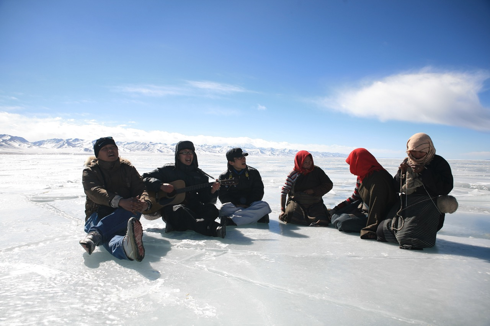
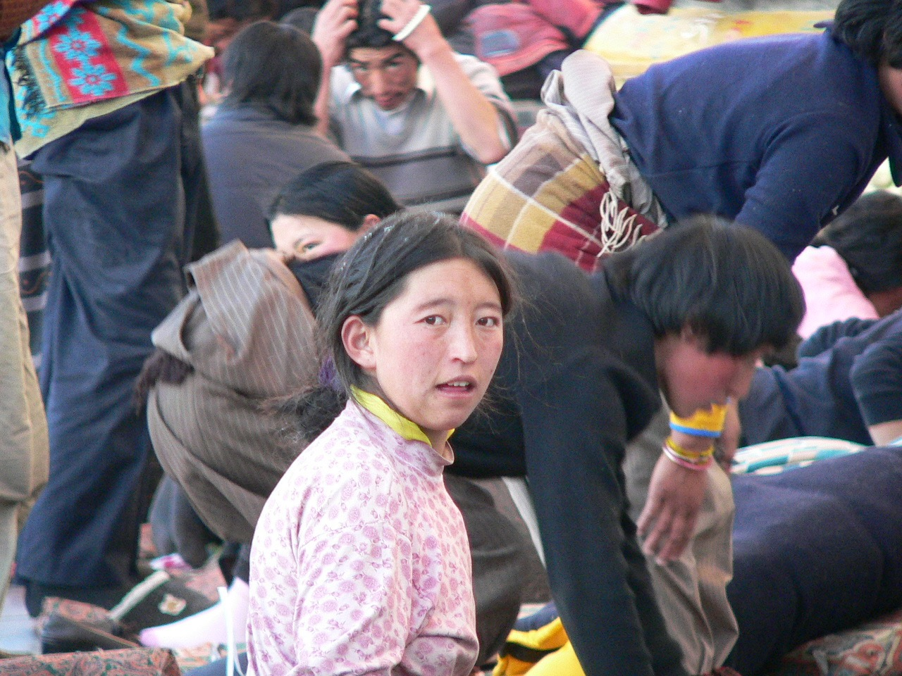
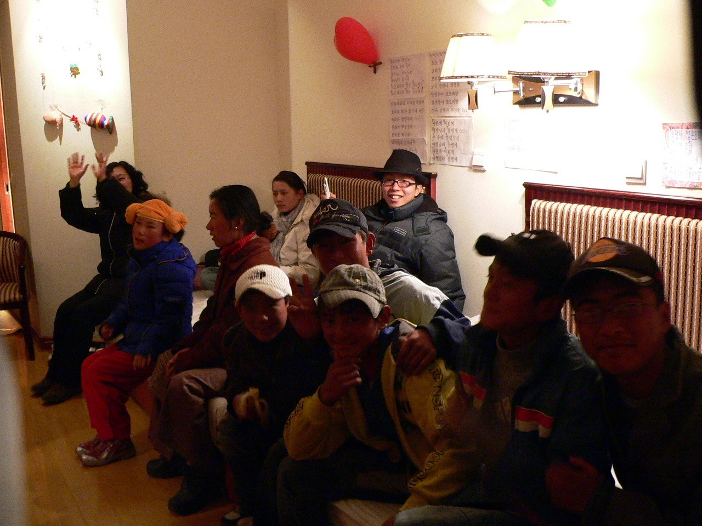
산소가 희박한 고도 4,000m의 대지 위에 수놓아진 맑고 투명한 영혼들의 눈빛을 마주합니다.
척박한 바람이 부는 장엄한 협곡 속에서, 굳게 잠겨 있던 칭하이-티벳 고원의 영적 빗장이 풀리기를 눈물로 축복했습니다. 길 위에서 스쳐 지나는 영혼 하나하나의 마음에 영원히 마르지 않는 생명의 복음 씨앗이 심어지길 원했던 잊을 수 없는 하늘 아래 첫 영토의 순간입니다.
필리핀 (Philippines)
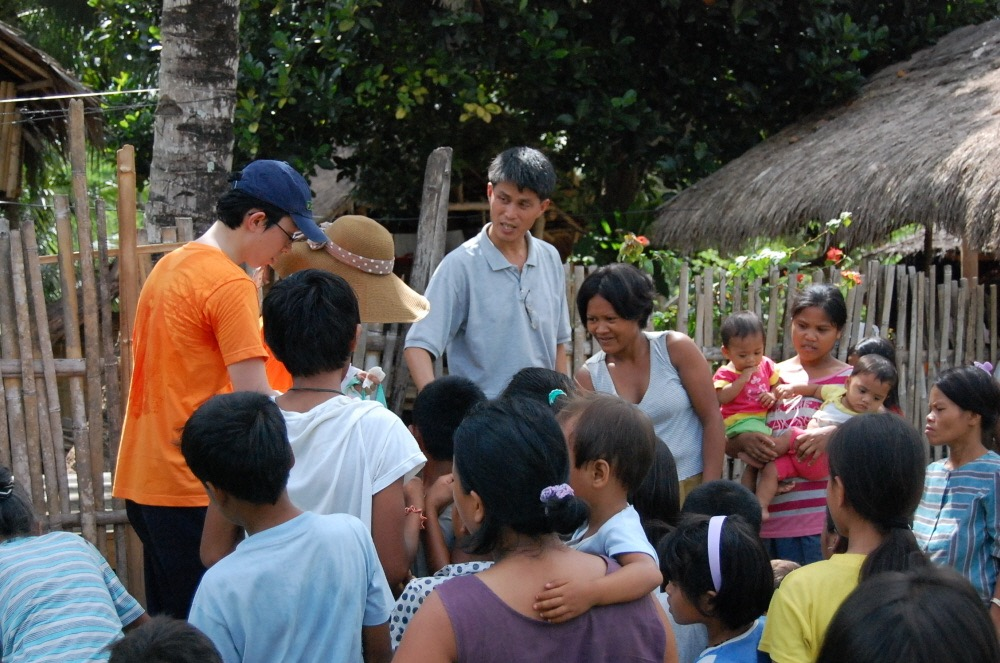
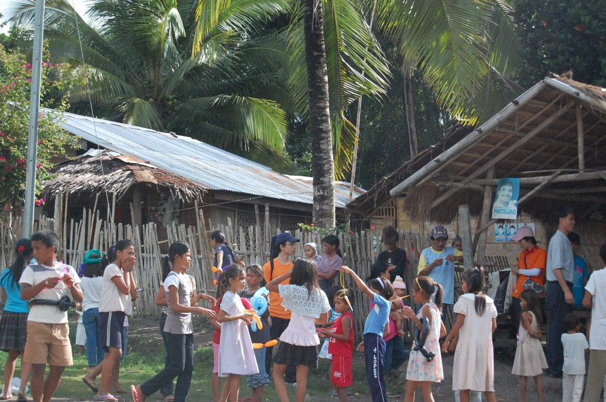
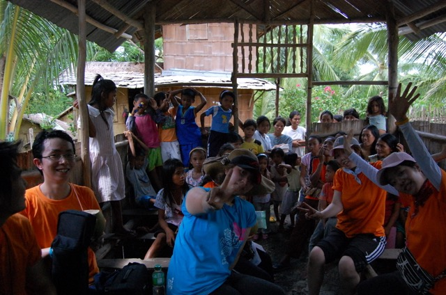
야자수 잎이 흩날리는 평화로운 주거지 사이로 어린 천사들의 해맑은 웃음소리가 울려 퍼집니다.
소박한 나무 울타리와 판자 처마 밑에서도 이웃들과의 진솔한 삶의 나눔을 이어갔습니다. 영적인 목마름을 안고 모인 성도들과 뜨겁게 부대끼며 하나님의 나라가 이미 가난하고 억눌린 자들 가운데 깊숙이 선포되고 있음을 생생히 체감한 축복 가득한 사역입니다.
아프리카 (Africa)
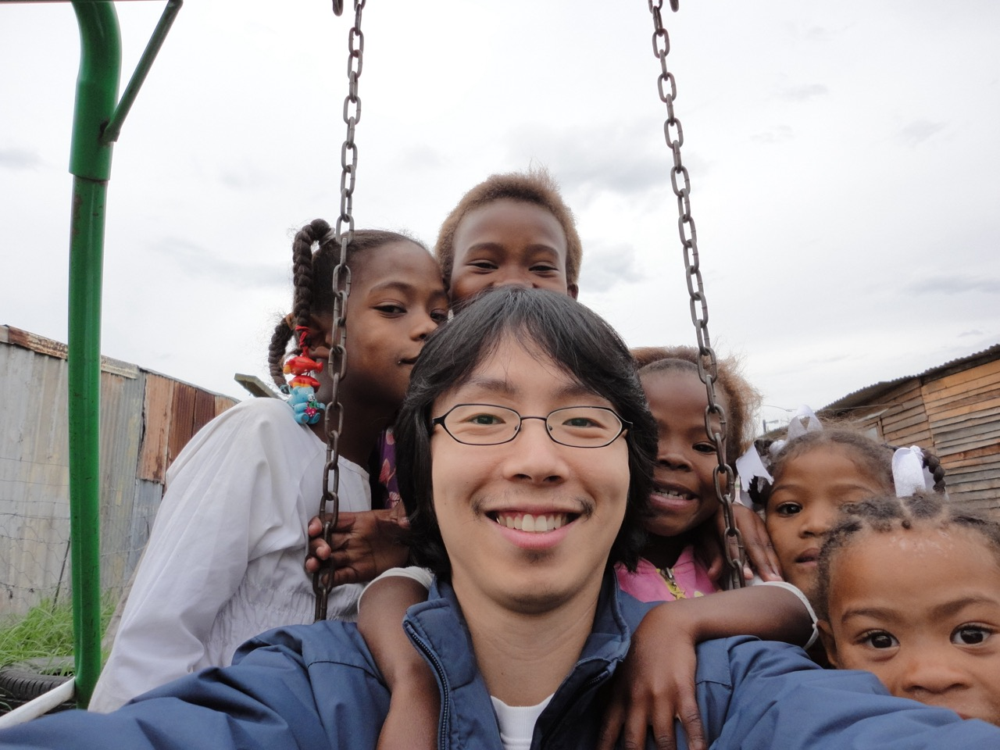
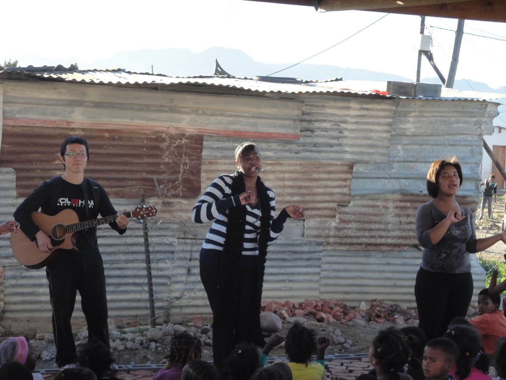
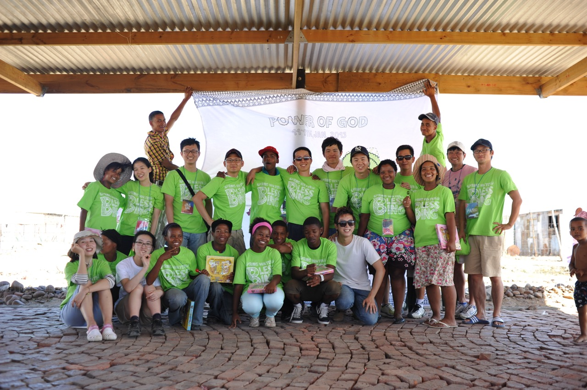
생명력을 상실한 사막과 소음의 한복판에 흘러가는 복음의 신성하고 힘찬 박동입니다.
기타를 메고 현지 찬양 인도자들과 함석 판자벽 예배당에 둥글게 둘러섰던 기적의 찬양 집회, 그네에 함께 매달린 순박한 아이들과의 사랑 가득한 셀피, 그리고 'SPRING WATER OF BLESSING' 성전 아래 모인 주님의 용사들까지. 아프리카 대륙의 상처를 보듬고 완전한 치유와 성령의 임재를 강력하게 부르짖은 자취입니다.
우즈베키스탄 (Uzbekistan)
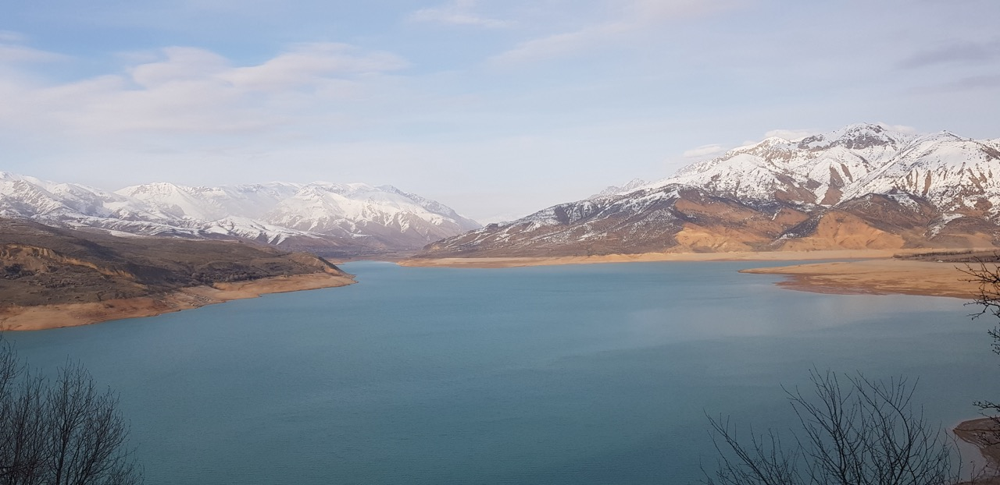
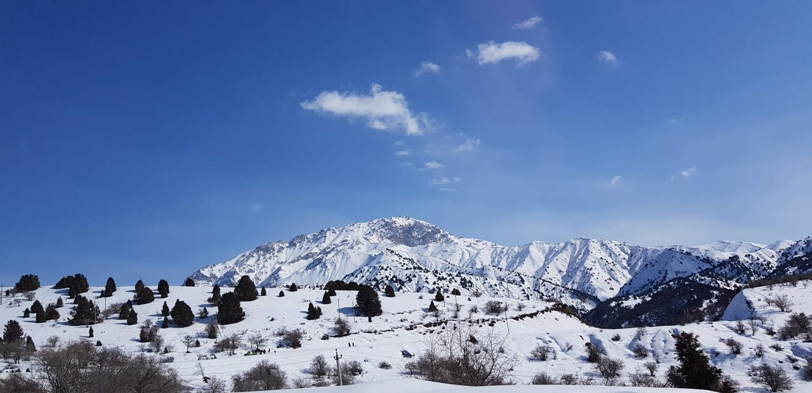
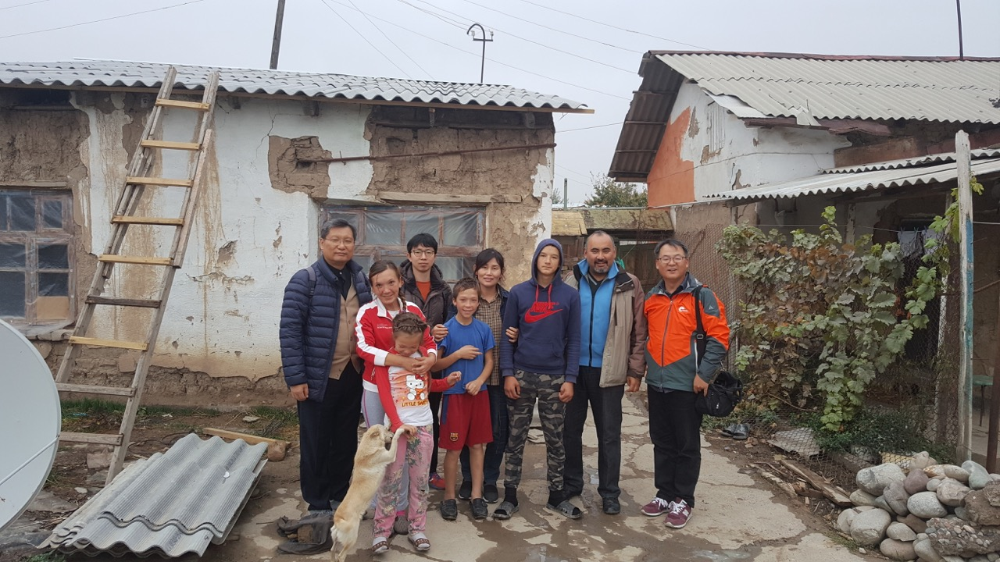
황막한 실크로드의 오랜 장막을 헤집고 번져가는 순교적 생명의 샘물입니다.
이슬람 사원들의 청색 기와와 차가운 장막 뒤로, 참된 하나님을 향한 진리의 해갈이 일어나고 있습니다. 조용히 영들의 거점을 축복하며, 메마른 모래폭풍 속에서도 결코 꺾이지 않고 가슴속에 깊은 사랑의 지표를 세운 중앙아시아 회복의 주춧돌을 조심스레 새겨 넣습니다.
몽골 (Mongolia)
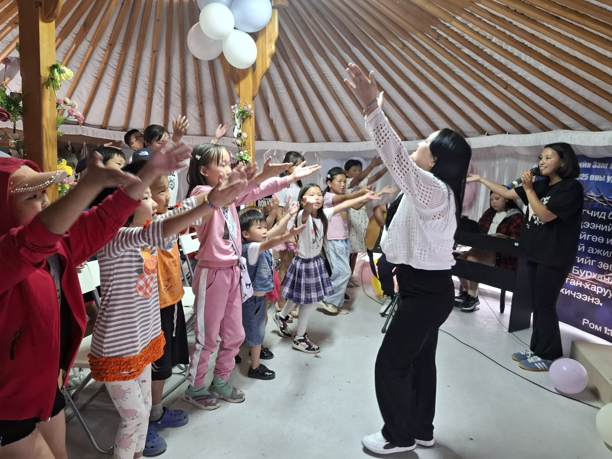
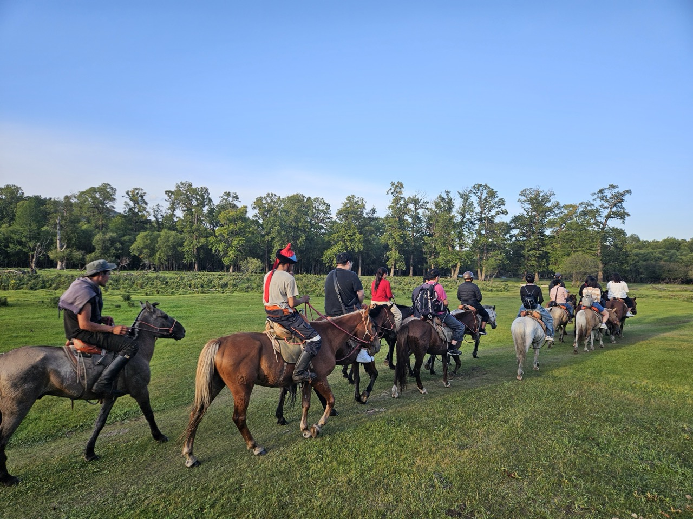
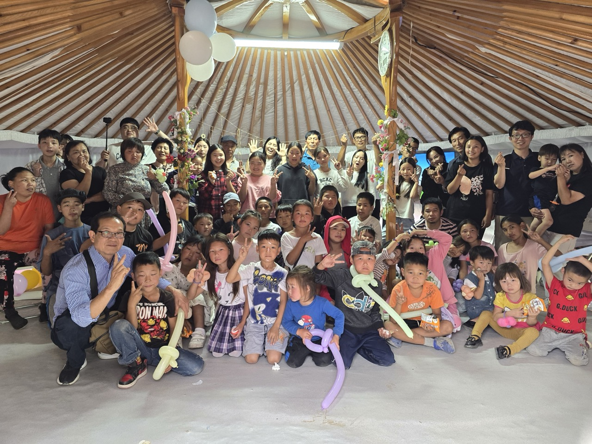
푸른 대평원 끝자락, 게르(Ger) 가득히 울려 퍼지는 천국 찬송의 뜨거운 하모니를 마음에 품습니다.
지평선을 가르며 말을 타고 오지 유목민들을 직접 찾아 나선 믿음의 대장정. 게르 둥근 천장을 뚫고 우주 끝까지 닿아 흐르는 아이들의 찬양 율동과 형형색색 풍선을 불어주던 미소 어린 친교는 우리 모두가 천국 시민이자 가족임을 다시 한번 진심으로 일깨워 주었습니다.